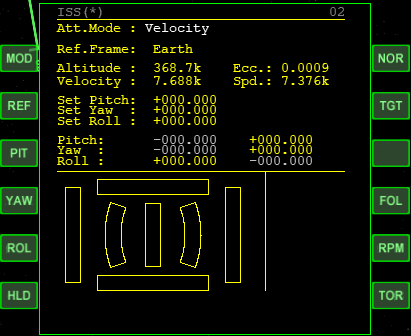
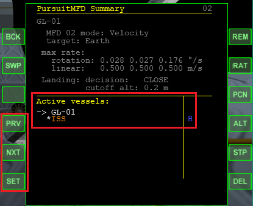
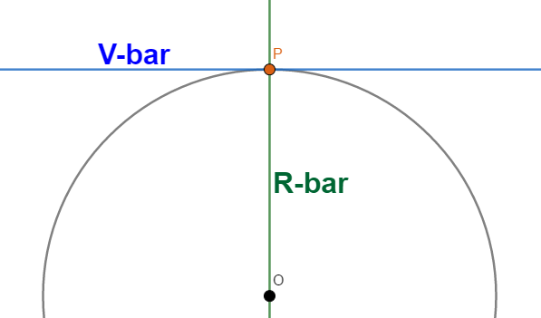

PursuitMFDのVelocityモードによる姿勢制御と、機体の遠隔操作について解説します。
PursuitMFDを開く。
左上のVELボタンをクリックして、Velocityモードにする。
Velocityモードでは、宇宙船の速度ベクトルの向きを基準に宇宙船の姿勢を決定する。
PIT、YAW、ROLの3つのボタンで宇宙船の姿勢を決定する。
数字を入力したらEnterを押す。
| PIT | ピッチ角を入力 |
| YAW | ヨー角を入力 |
| ROL | ロール角を入力 |
NORボタンを何度かクリックすると、ロール軸の制御が無効・有効になる。
| KILL ROLL | ロール軸の回転を止める |
| NO ROLL | ロール軸の制御を無効にする |
| ロール軸の制御が有効 |

HLD(Hold)ボタンをクリックすると、姿勢制御が開始される。
タイムワープ10倍（Tキー）にして、しばらく待つ。
姿勢変更が完了したら、タイムワープを解除する。（Rキー）
完全に姿勢が安定すると、100倍までのタイムワープが可能。
MFD左上のREMをクリック。
遠隔操作したい宇宙船・ステーションの名前を入力して、Enterを押す。
モード選択画面になるので、使用したい機能に対応したボタンをクリック。
すでにオートパイロットを実行中なら、CFGをクリック。
Summary画面で右のREMをクリック。
遠隔操作したい宇宙船・ステーションの名前を入力して、Enterを押す。

PRV / NXTで操作する宇宙船を切り替える。
SETで決定する。
モード選択画面になるので、使用したい機能に対応したボタンをクリック。
現実のISSやスペースシャトルは、それぞれ必要に応じてある姿勢を維持するようになっています。
ISSは地球側にキューポラを、スペースシャトルは地球側に放熱パネルを向けて軌道を周回しています。
PursuitMFDを使って、これらの姿勢制御を再現できます。
ISSが登場する適当なシナリオでゲームを開始する。
PursuitMFDの遠隔操作か、F3キーでISSを操作できるようにしておく。
PursuitMFDを開いて、Velocityモードにする。
NORボタンを何度かクリックして、ロール軸の制御を有効にする。
PIT、YAW、ROLの全部が000.000になっていることを確認する。
HLDボタンをクリックして、タイムワープ10倍でしばらく待つ。
宇宙船・宇宙ステーションなどが、ある天体の軌道上を周回しているものとします。
このとき、天体の中心と宇宙船を通る直線をR-bar、宇宙船の速度ベクトルの方向をV-barと呼びます。※
※RはRadius、VはVelocityの略

ISS（国際宇宙ステーション）は地球に常に同じ面を向けて軌道上を周回しています。
このとき、スペースシャトルやクルードラゴンが使用するドッキングポートは前方(V-bar)に来るようになっています。
PursuitMFDのVelocityモードとDockingモードを併用することで、V-barからのドッキングを再現することができます。
PursuitMFDを開いて、Velocityモードにする。
NORボタンを何度かクリックして、ロール軸の制御を有効にする。
ROLボタンをクリックして、180と入力してEnterを押す。
HLDボタンをクリックして、タイムワープ10倍でしばらく待つ。